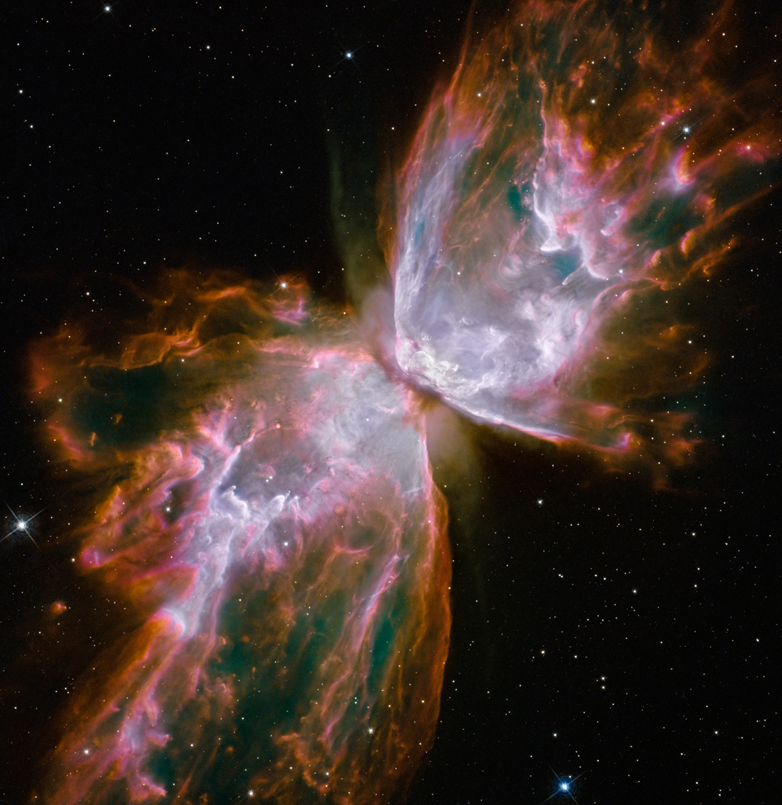

Teaching

Astronomy Lab Info
I taught both ASTR 1010 and 1020 lab sections, including setting up the lab,
presenting a brief introduction, and grading lab worksheets.
Main Lab webpage
 ASTR 1020 Lab
Lab 28 - Visiting an Observatory